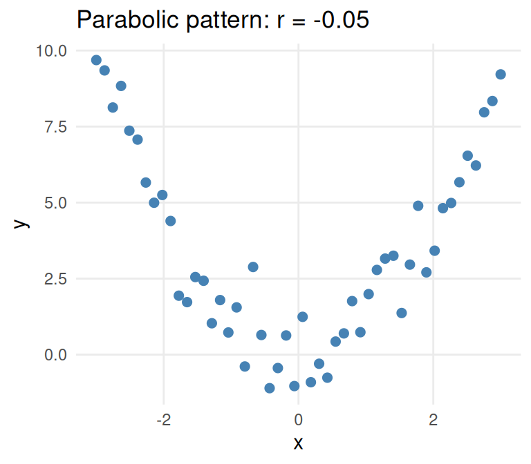
7.1 Inference for Slope and Correlation
Key Concepts
- Use computer output to make predictions and interpret coefficients using a fitted simple linear model
- Construct a confidence interval for the slope in a regression model
- Test a hypothesis about the slope of a regression model
- Test for evidence of a linear association between two quantitative variables using a sample correlation
- Compute and interpret the value of\(r^2\)for a regression model
- Check a scatterplot for obvious departures from a simple linear model
Modeling with two quantitative variables
In the last chapter we discussed how to use a categorical variable to model a quantitative response using ANOVA, and in this chapter we will be discussing how to use a quantitative variable to model a quantitative response. In statistics, when both the explanatory and response variables are quantitative, we use regression in order to explain the response variable. However, before we get into the details for regression, it’s helpful to first discuss the concept of correlation.
Exploring correlation with a scatterplot
A scatterplot is a graph of the relationship between two quantitative variables
To get a sense of how one quantitative variable impacts another, it is helpful to first plot the data. To graphically display two quantitative variables, we use a scatterplot, or a graph that displays the relationship between two quantitative variables. When looking at a scatterplot, we should consider four different aspects of the plot:
- Do the points form a clear trend with a particular direction, are they more scattered about a general trend, or is there no obvious pattern?
- If there is a trend, is it generally upward or generally downward as we look from left to right? A general upward trend is called a positive association while a general trend downward is called a negative association.
- If there is a trend, does it seem to follow a straight line, which we call a linear association, or some other curve or pattern?
- Are there any outlier points that are clearly distinct from a general pattern in the data?
Properties of the linear correlation coefficient
There are a few properties about the correlation coefficient,\(r\), you should know, and we will illustrate them with some pictures.
a)\(r\)is always between\(-1\)and\(1\), inclusive:\(-1 \le r \le 1\)
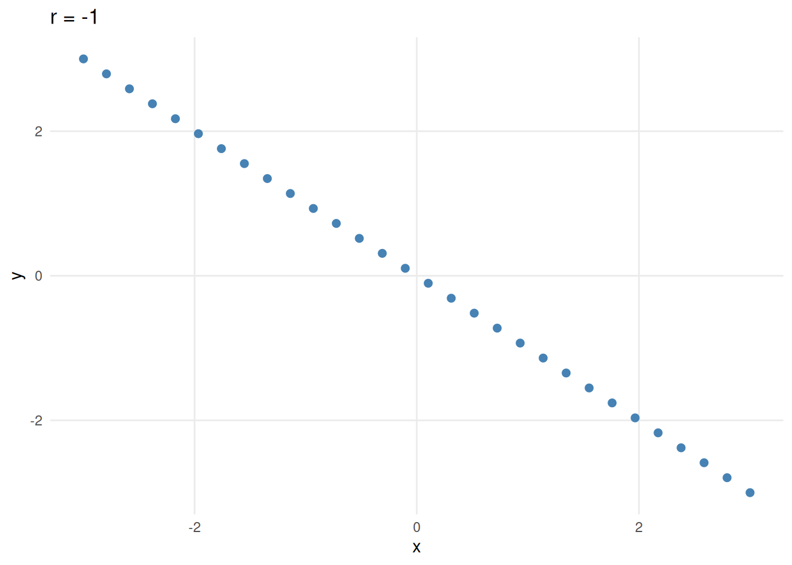
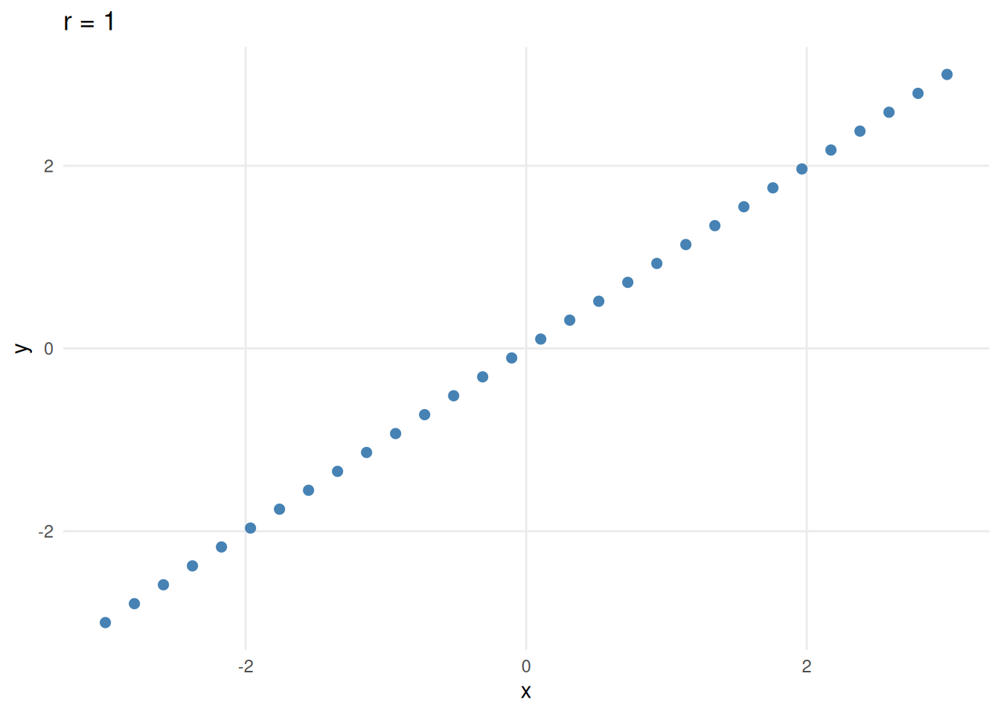
The sign of \(r\)(positive or negative) indicates the direction of association.
Values of \(r\)close to\(-1\)or\(+1\)show a strong linear relationship, while values of \(r\)close to\(0\)show no linear relationship.
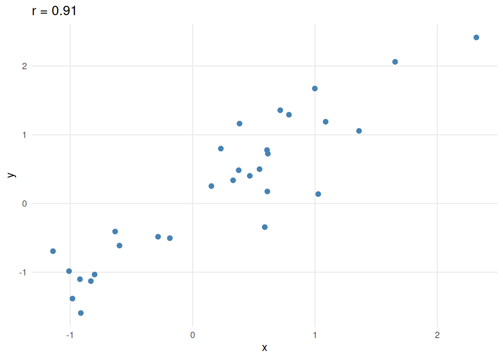
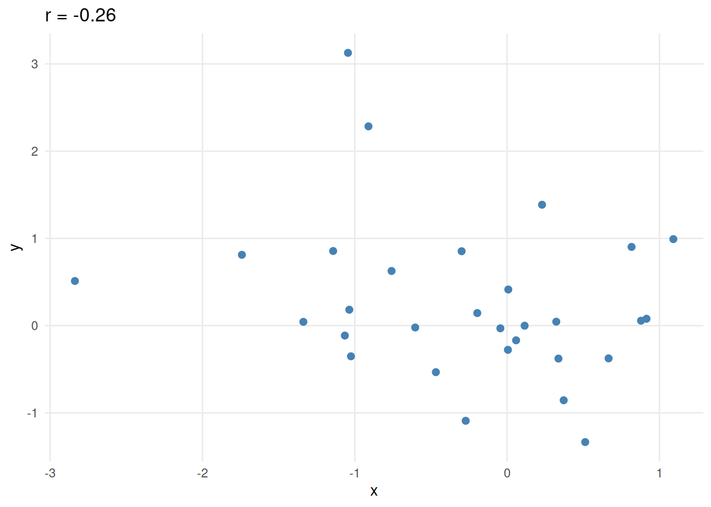
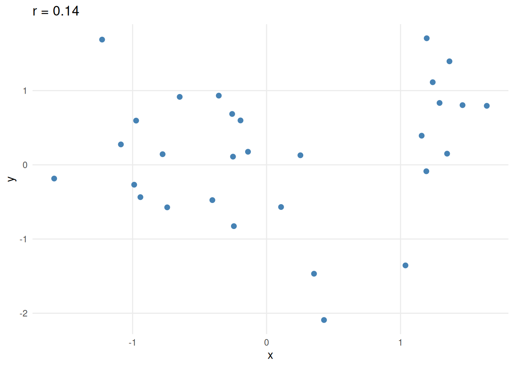
d)\(r\)has no units and is independent of the scale of either variable.
- Correlation is symmetric: The correlation between variables \(x\)and \(y\)is the same as the correlation between \(y\)and \(x\).
Correlation coefficient cautions
Here are a few things to keep in mind when working with the correlation coefficient:
a)\(r\)can be heavily influenced by outliers.
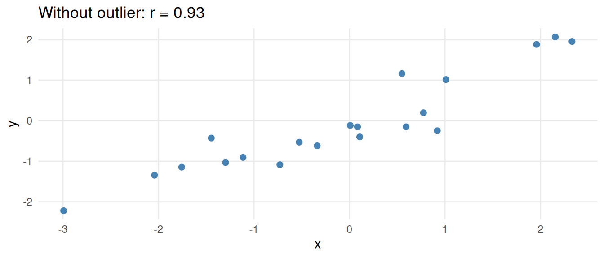
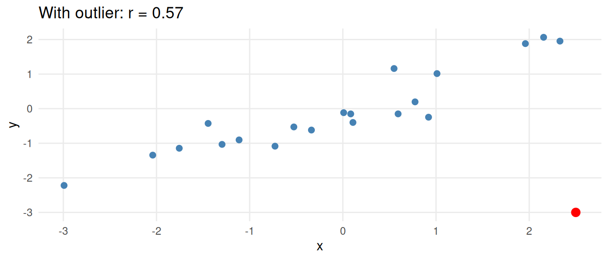
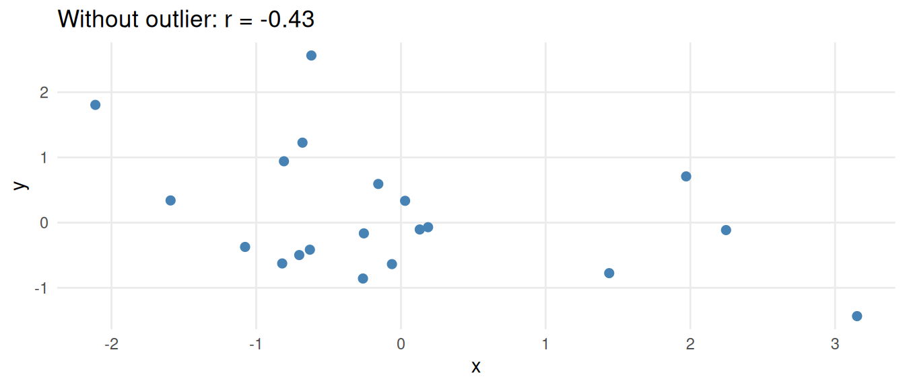
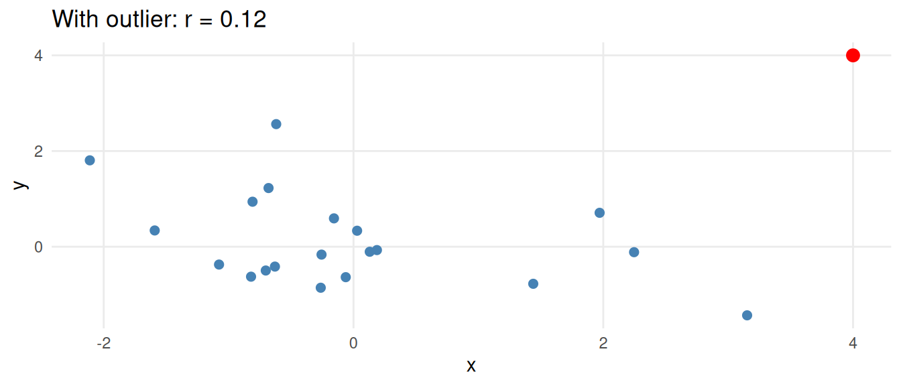
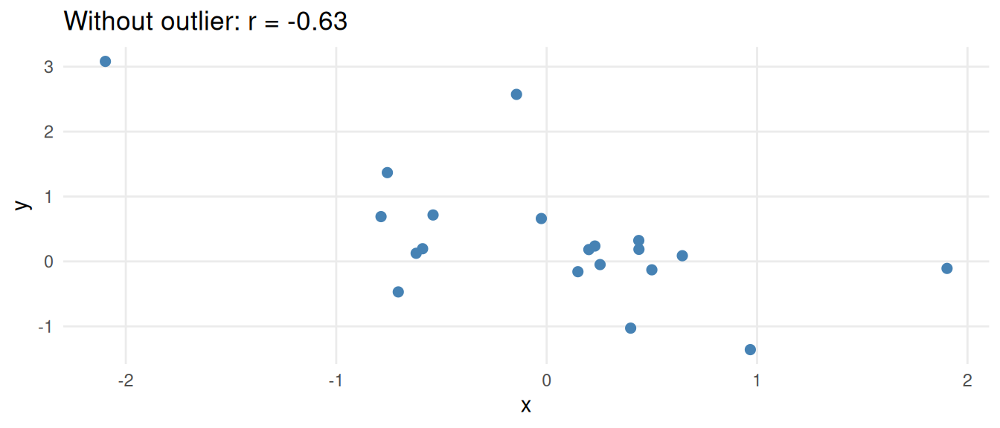
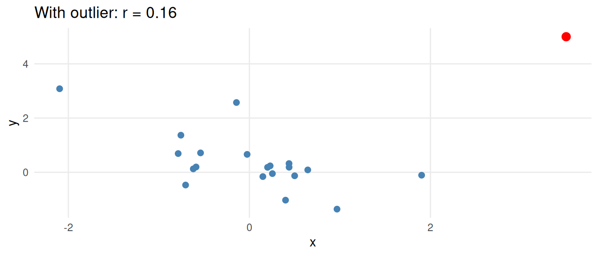
A strong positive or negative correlation coefficient does not (necessarily) imply a cause and effect relationship between the two variables.
A correlation coefficient near zero does not (necessarily) mean that the two variables are not associated, since correlation measures only the strength of a linear relationship (see side figure).
Linear regression
A residual is the difference between an observed values and a predicted value of a response
The least squares line is the equation that has the smallest sum of squared residuals
Now we are going to introduce a new statistical method that can used to fit a line to the dataset. To begin with, it’s important to first define a residual. To find a residual for a single observation, we use the following formula:
\[ \text{Residual} = \text{Observed} - \text{Predicted} = y - \widehat{y} \]
We say that the line that fits the data best is the least squares line, which minimizes the sum of the squared residuals.
Equation of the line
Notation:
-\(\widehat{y}\): predicted value -\(b_0\): intercept estimate -\(b_1\): slope estimate
A sample regression has the following form:
\[ \widehat{y} = b_0 + b_1 x \]
where \(\widehat{y}\)is the predicted value for a specific value of the explanatory variable,\(x\),\(b_0\)is the intercept, and\(b_1\)is the slope. The slope,\(b_1\), represents the average predicted change in the response variable,\(y\), given a one unit increase in the explanatory variable,\(x\). The intercept,\(b_0\), represents the predicted value of the response variable,\(y\), if the explanatory variable,\(x\)is zero. The equation for the intercept and slope are given as
\[ b_1 = r \frac{ s_y }{ s_x } \qquad b_0 = \overline{y} - b_1 \overline{x}. \]
The slope and correlation coefficient should always have the same sign
One thing to notes from this formula is that the slope and correlation should always have the same sign.
Class Example 7.1.1: Boats
A 2024 dataset from BoatTrader.com reveals the relationship between the listing price of a boat and it’s corresponding length in feet. Some summary statistics and a scatterplot of the data are given below.
| Variable | Average | Std. Dev. |
|---|---|---|
| Price | \(51,498.28\) | \(66,128.95\) |
| Length | \(22.61\) | \(8.07\) |
\(r = 0.364\)
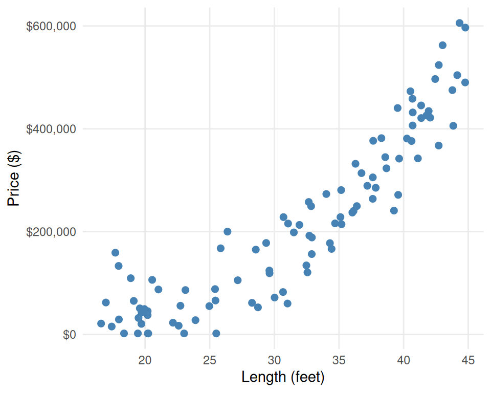
- Looking at the plot, would you categorize the correlation as positive or negative? Strong, moderate, or weak?
- Which variable should be the explanatory variable, which variable should be the response?
- Use the summaries to find estimates for the slope and intercept for the regression line. Record your answer in the form \(\widehat{y} = b_0 + b_1x\).
- If one of the boats had a length of 20 feet and a price of$50,000, find the predicted value and residual for this person.
- Provide an interpretation of the slope in the context of the problem.
Inference for slopes
Population parameters:
-\(\beta_0\): population intercept -\(\beta_1\): population slope
As with means and proportions, the regression coefficients,\(b_0\)and\(b_1\), are statistics and are estimates of the population intercept,\(\beta_0\), and population slope,\(\beta_1\). Most of the time, we will not be interested in inference for \(\beta_0\), so the rest of the lecture on regression will focus on inference for the population slope \(\beta_1\). To conduct a hypothesis test for the slope, we will be testing
\[ H_0: \beta_1 = 0 \qquad \qquad H_a: \begin{cases} \beta_1 < 0\\ \beta_1 > 0\\ \beta_1 \neq 0 \end{cases} \]
As with all statistics, we need to report a standard error in order to determine if our findings are significant. This will be provided to you with software output, so you do not need to worry about calculating this on your own. However, you will need to know how to find the test statistic in order to find a \(p\)-value. For a hypothesis test about a slope, we use the test statistic
SE\((b_1)\)is the standard error of\(b_1\)
\[ t = \frac{ b_1 - 0 }{ \text{SE}(b_1) } \]
where SE\((b_1)\)stands for standard error of\(b_1\). To find a \(p\)-value, you should use a \(t\)-distribution with\(n-2\)degrees of freedom. The remaining steps of the hypothesis test are the same as all other hypothesis tests. The table below shows output that is typically given by software when conducting linear regression.
| Coefficients | Estimate | Std. Error | \(t\) |
|---|---|---|---|
| (Intercept) | \(b_0\) | SE\((b_0)\) | \(t\)for\(b_0\) |
| Explanatory Variable | \(b_1\) | SE\((b_1)\) | \(t\)for\(b_1\) |
Class Example 7.1.2: Boats continued
The table below gives the output from results for a simple linear regression of boat price with length for a 2025 dataset.
| Coefficients | Estimate | Std. Error | \(t\) | \(p\)-value (2-sided) |
|---|---|---|---|---|
| (Intercept) | \(-78,776.98\) | \(4,431.58\) | \(-17.78\) | \(< 0.0001\) |
| Length | \(5,761.80\) | \(184.61\) | \(31.21\) | \(< 0.0001\) |
- Use the output to conduct a hypothesis test to see if there is a positive relationship between a boat’s length and price. Use \(\alpha = 0.05\).
- The hypothesis test revealed a statistically significant positive relationship between a boat’s length and price. Is this practically significant?
Conditions for inference
In order to conduct inference for regression, we need to satisfy a few conditions.
- The relationship should be linear
- The residuals should have a normal distribution for all values of \(x\)
- The variability in the response should be the same for all values of \(x\)
- There should not be any outliers that unduly influence the results of the regression.
We can check conditions 1, 3, and 4 using a scatterplot of the data. Condition 2 can be checked using a histogram of residuals or a QQ plot.
Words of caution for regression
Although regression is a powerful tool, there are a couple of words of wisdom to keep in mind.
- Like correlation, regression only tells us about the linear relationship between the explanatory and response variables.
- Do not ever extrapolate or predict a response beyond the range of the explanatory variable. The regression equation only tells us about the relationship between the response and explanatory within the range of the explanatory variable.
- As with correlation, just because there is a statistically significant relationship, it does not mean that there is a causal relationship. Remember correlation does not mean causation.
Coefficient of determination:\(r^2\)
\(r^2\)gives the percentage of variation in the response variable that we can explain with the explanatory variable
There is another statistic from regression that is often used to compare two simple linear regressions models with each other. The coefficient of determination, notated\(r^2\), gives the percentage of variation in the response variable that we can explain by the linear regression using the explanatory variable. If we are picking between two different simple linear regression models, you should select the model that has a higher\(r^2\)value. To find\(r^2\), square the correlation coefficient \(r\).
Class Example 7.1.3: Price and Horsepower
In the previous example, we used the variable length to predict price. Now we’re going to use horsepower to predict price. The table below gives the output from a simple linear regression of price with horsepower.
| Coefficients | Estimate | Std. Error | \(t\) | \(p\)-value (2-sided) |
|---|---|---|---|---|
| (Intercept) | \(36,449.63\) | \(1,998.92\) | \(18.23\) | \(< 0.0001\) |
| Horsepower | \(162.27\) | \(8.50\) | \(19.09\) | \(< 0.0001\) |
- \(r = 0.5245\)
-
Output from results for a simple linear regression of drinks with classes missed
- Using the output above, write the regression equation in the form \(\widehat{y} = b_0 + b_1 x\).
- Find the predicted and residual value for a boat with 500 horsepower and a price of $90,000.
- Interpret the slope of the line in the context of the problem.
- Conduct a hypothesis test to see if there is a significant positive relationship between horsepower and price. Use \(\alpha = 0.05.\)
- Does horsepower or length explain price better? Explain.